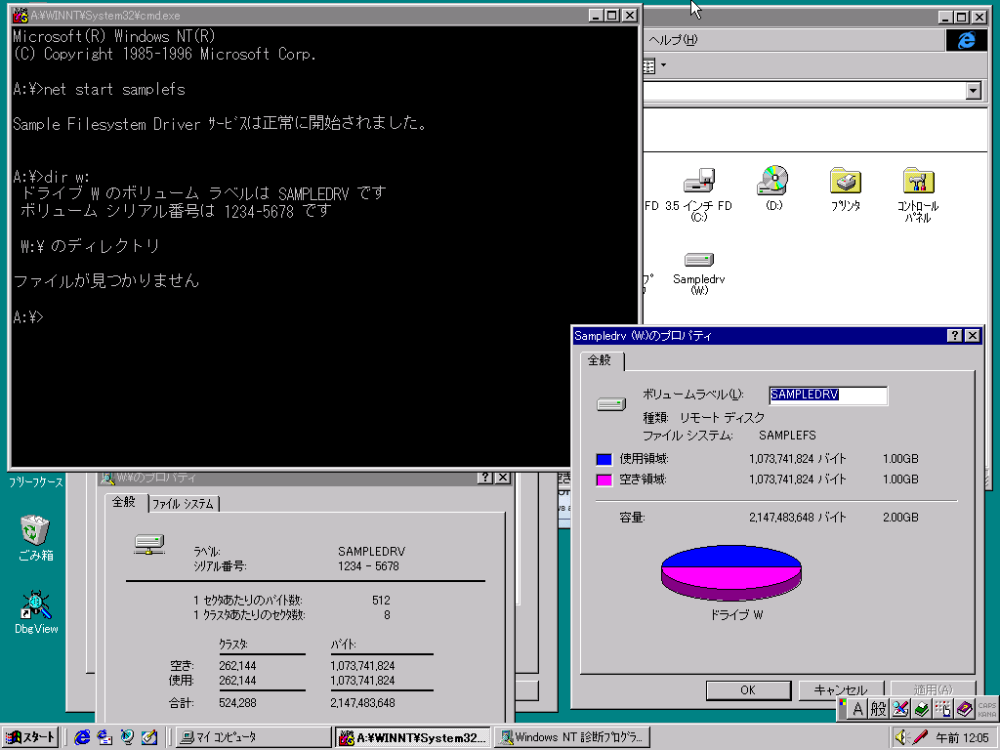

まずはもっとも基本的なファイルシステムドライバとして、空のドライブを表示するファイルシステムドライバを作ります。 この場合、基本的には以下の3つが実装されていれば十分です。
この段階では上の3つ程度の実装で十分ですが、先のことを考えて、返すべきステータスが単純なものもこの際に実装してしまいましょう。
上記の仕様を満たすファイルシステムドライバのサンプルコードは以下のようになります。 このテンプレートではWドライブとして自動割り当てされた空のディスクを表示させることが出来ます。 なお、実際のネットワークと連携しませんが、見た目はネットワークドライブのように見せかけています。
サンプルファイル一式も用意しています。samplefs1.zip
#include <ntddk.h>
#include "miniifs.h"
#include "minisop.h"
// このデバイスドライバのデバイス名
#define DEVICE_NAME L"\\Device\\SAMPLEFS"
#define DOS_DEVICE_NAME L"\\DosDevices\\SAMPLEFS"
#define DOS_DRIVE_NAME L"\\DosDevices\\W:"
#define SAMPLEFS_VOLUMELABEL L"SAMPLEDRV"
#define SAMPLEFS_FILESYSTEM L"SAMPLEFS"
// irpSp->FileObject->FsContextへ格納する情報
// 参考情報：irpSp->FileObject->FsContextへ適当なIDを入れるのはNG。色々動かなくなる。
// 必ずExAllocatePoolWithTag(NonPagedPool, ～で割り当てたメモリである必要がある。
// [Undocumented] 構造体サイズは少なくとも64byteないと駄目？
// ないとOSが決め打ちの範囲外参照してIRQL_NOT_LESS_OR_EQUALが頻発。どこまであれば安全かは不明。
// FSRTL_COMMON_FCB_HEADERを構造体の最初に含めなければならないという条件が必須のようにも思えます。
typedef struct tagSAMPLEFS_FSCONTEXT {
FSRTL_COMMON_FCB_HEADER header; // OSが使うので触ってはいけない。32bit環境では40byte
ULONG reserved[6]; // 予約
} SAMPLEFS_FSCONTEXT, *PSAMPLEFS_FSCONTEXT;
// グローバルに管理する変数群
static FAST_MUTEX g_Mutex; // 排他ロック用
// 関数定義
NTSTATUS DriverEntry(IN PDRIVER_OBJECT DriverObject, IN PUNICODE_STRING RegistryPath);
NTSTATUS SampleFSDispatch(IN PDEVICE_OBJECT DeviceObject, IN PIRP Irp);
VOID SampleFSUnload(IN PDRIVER_OBJECT DriverObject);
// デバイスドライバのエントリポイント
NTSTATUS DriverEntry(IN PDRIVER_OBJECT DriverObject, IN PUNICODE_STRING RegistryPath) {
UNICODE_STRING deviceNameUnicodeString, dosDeviceNameUnicodeString, dosDriveNameUnicodeString;
PDEVICE_OBJECT deviceObject = NULL;
NTSTATUS status;
int i;
KdPrint(("SanpleFS: Loading...\n"));
// 排他ロック初期化 初期化のみで破棄処理はいらない
ExInitializeFastMutex(&g_Mutex);
// デバイスを作成
RtlInitUnicodeString(&deviceNameUnicodeString, DEVICE_NAME);
status = IoCreateDevice(DriverObject, 0, &deviceNameUnicodeString,
FILE_DEVICE_NETWORK_FILE_SYSTEM, FILE_REMOTE_DEVICE, FALSE, &deviceObject);
if (!NT_SUCCESS(status)) {
KdPrint(("IoCreateDevice failed: STATUS=0x%08x\n", status));
return status;
}
// デバイスのDOS名を登録 \\.\SAMPLEFSのようにアクセスできる
RtlInitUnicodeString(&dosDeviceNameUnicodeString, DOS_DEVICE_NAME);
status = IoCreateSymbolicLink(&dosDeviceNameUnicodeString, &deviceNameUnicodeString);
if (!NT_SUCCESS(status)) {
IoDeleteDevice(deviceObject);
KdPrint(("IoCreateSymbolicLink failed: STATUS=0x%08x\n", status));
return status;
}
// デバイスのドライブレターを登録 DOS_DRIVE_NAMEで指定したドライブでアクセスできる
RtlInitUnicodeString(&dosDriveNameUnicodeString, DOS_DRIVE_NAME);
status = IoCreateSymbolicLink(&dosDriveNameUnicodeString, &deviceNameUnicodeString);
if (!NT_SUCCESS(status)) {
IoDeleteDevice(deviceObject);
KdPrint(("IoCreateSymbolicLink(Drive) failed: STATUS=0x%08x\n", status));
return status;
}
// デバイスのIRP処理関数を登録 要素番号が各IRP_MJ_～の番号に対応。
// 個別に割り当ててもよいが、面倒なので全部に同じ関数を割り当て
for (i = 0; i < IRP_MJ_MAXIMUM_FUNCTION; i++) {
DriverObject->MajorFunction[i] = SampleFSDispatch;
}
// ドライバの終了処理を登録
DriverObject->DriverUnload = SampleFSUnload;
// その他追加フラグを設定
deviceObject->Flags |= DO_BUFFERED_IO; // データ受け渡しでSystemBufferを基本とする？指定しても他方式で来るときは来る気がする。
KdPrint(("SanpleFS: Loaded successfully\n"));
return STATUS_SUCCESS;
}
VOID SampleFSUnload(IN PDRIVER_OBJECT DriverObject) {
UNICODE_STRING dosDeviceNameUnicodeString, dosDriveNameUnicodeString;
WCHAR dosDriveName[] = DOS_DRIVE_NAME;
KdPrint(("SanpleFS: Unloading...\n"));
// 排他領域開始
ExAcquireFastMutex(&g_Mutex);
// SOPリスト解放
MiniSOP_ReleaseSOPList();
// 排他領域終了
ExReleaseFastMutex(&g_Mutex);
// 自動ドライブ文字割り当て解除
RtlInitUnicodeString(&dosDriveNameUnicodeString, DOS_DRIVE_NAME);
IoDeleteSymbolicLink(&dosDriveNameUnicodeString);
// DOS名を登録解除
RtlInitUnicodeString(&dosDeviceNameUnicodeString, DOS_DEVICE_NAME);
IoDeleteSymbolicLink(&dosDeviceNameUnicodeString);
// デバイスを削除
IoDeleteDevice(DriverObject->DeviceObject);
KdPrint(("SanpleFS: Unloaded successfully\n"));
}
NTSTATUS SampleFSDispatch(IN PDEVICE_OBJECT DeviceObject, IN PIRP Irp) {
PIO_STACK_LOCATION irpSp = IoGetCurrentIrpStackLocation(Irp);
NTSTATUS status = STATUS_NOT_IMPLEMENTED;
PVOID systemBuffer = NULL;
KdPrint(("SampleFSDispatch\n"));
if (Irp->MdlAddress != NULL) {
// MdlAddressを使った直接的な転送
systemBuffer = MmGetSystemAddressForMdl(Irp->MdlAddress); // 古いOS対応用
//systemBuffer = MmGetSystemAddressForMdlSafe(Irp->MdlAddress, NormalPagePriority); // 最近のOSならこれも可能（より安全？）
} else if (Irp->AssociatedIrp.SystemBuffer != NULL) {
// システムバッファ経由での間接的な転送
systemBuffer = Irp->AssociatedIrp.SystemBuffer;
} else {
// ユーザー指定バッファへの転送
systemBuffer = Irp->UserBuffer;
}
if (irpSp->MajorFunction == IRP_MJ_CREATE) {
ULONG sopIndex = -1;
ULONG returnInformation = 0;
ULONG options;
UCHAR createDisposition;
KdPrint(("IRP_MJ_CREATE\n"));
// ファイルを開いたときの処理
// FileObjectがNULLなのは異常なのでエラーで弾く
if(irpSp->FileObject == NULL){
KdPrint(("FileObject is NULL\n"));
Irp->IoStatus.Status = status = STATUS_INVALID_PARAMETER;
Irp->IoStatus.Information = 0;
IoCompleteRequest(Irp, IO_NO_INCREMENT);
return status;
}
// IRPスタックからパラメータを取得
options = irpSp->Parameters.Create.Options;
// とりあえずOPENだけ許す
createDisposition = (UCHAR)((options >> 24) & 0xff); // ファイルオープンモード 新規作成など
switch (createDisposition)
{
case FILE_SUPERSEDE:
KdPrint(("MODE FILE_SUPERSEDE"));
returnInformation = FILE_SUPERSEDED;
Irp->IoStatus.Status = status = STATUS_ACCESS_DENIED;
Irp->IoStatus.Information = 0;
IoCompleteRequest(Irp, IO_NO_INCREMENT);
return status;
case FILE_OPEN:
KdPrint(("MODE FILE_OPEN"));
returnInformation = FILE_OPENED;
break;
case FILE_CREATE:
KdPrint(("MODE FILE_CREATE"));
returnInformation = FILE_CREATED;
Irp->IoStatus.Status = status = STATUS_ACCESS_DENIED;
Irp->IoStatus.Information = 0;
IoCompleteRequest(Irp, IO_NO_INCREMENT);
return status;
case FILE_OPEN_IF:
KdPrint(("MODE FILE_OPEN_IF"));
returnInformation = FILE_OPENED;
break;
case FILE_OVERWRITE:
KdPrint(("MODE FILE_OVERWRITE"));
returnInformation = FILE_OVERWRITTEN;
Irp->IoStatus.Status = status = STATUS_ACCESS_DENIED;
Irp->IoStatus.Information = 0;
IoCompleteRequest(Irp, IO_NO_INCREMENT);
return status;
case FILE_OVERWRITE_IF:
KdPrint(("MODE FILE_OVERWRITE_IF"));
returnInformation = FILE_OVERWRITTEN;
Irp->IoStatus.Status = status = STATUS_ACCESS_DENIED;
Irp->IoStatus.Information = 0;
IoCompleteRequest(Irp, IO_NO_INCREMENT);
return status;
}
// FsContextにExAllocatePoolWithTag(NonPagedPool,～でメモリ割り当て
// NULLのままだったり違う方法で割り当てると正常に動かないので注意
irpSp->FileObject->FsContext = ExAllocatePoolWithTag(NonPagedPool, sizeof(SAMPLEFS_FSCONTEXT), "HSFC");
if(irpSp->FileObject->FsContext == NULL){
KdPrint(("Cannot allocate FsContext\n"));
Irp->IoStatus.Status = status = STATUS_INSUFFICIENT_RESOURCES;
Irp->IoStatus.Information = 0;
IoCompleteRequest(Irp, IO_NO_INCREMENT);
return status;
}
RtlZeroMemory(irpSp->FileObject->FsContext, sizeof(SAMPLEFS_FSCONTEXT));
if(irpSp->FileObject->FileName.Length > 0){
KdPrint(("FileName: %wZ\n", &irpSp->FileObject->FileName));
}
// Section Object Pointer(SOP)取得
// Section Object Pointerは同じファイルの時は同じものを返さなければならない
ExAcquireFastMutex(&g_Mutex);
sopIndex = MiniSOP_GetSOPIndex(irpSp->FileObject->FileName);
ExReleaseFastMutex(&g_Mutex);
if(sopIndex == -1){
KdPrint(("Cannot allocate SOP\n"));
ExFreePool(irpSp->FileObject->FsContext);
Irp->IoStatus.Status = status = STATUS_INSUFFICIENT_RESOURCES;
Irp->IoStatus.Information = 0;
IoCompleteRequest(Irp, IO_NO_INCREMENT);
return status;
}
irpSp->FileObject->SectionObjectPointer = MiniSOP_GetSOP(sopIndex);
// メモリマップトファイルを正常動作させるためのWORKAROUND
MiniSOP_HandleMjCreateCache(irpSp);
KdPrint(("IRP_MJ_CREATE success\n"));
// 常に成功とする
Irp->IoStatus.Status = STATUS_SUCCESS;
Irp->IoStatus.Information = returnInformation;
}else if (irpSp->MajorFunction == IRP_MJ_CLEANUP) {
KdPrint(("IRP_MJ_CLEANUP\n"));
// メモリマップトファイルを正常動作させるためのWORKAROUND
MiniSOP_HandleMjCleanupCache(irpSp);
// 常に成功とする
Irp->IoStatus.Status = STATUS_SUCCESS;
Irp->IoStatus.Information = 0;
}else if (irpSp->MajorFunction == IRP_MJ_CLOSE) {
KdPrint(("IRP_MJ_CLOSE\n"));
// ファイルを閉じたので破棄
if(irpSp->FileObject->SectionObjectPointer){
PSECTION_OBJECT_POINTERS sop;
// SOP解放
ExAcquireFastMutex(&g_Mutex);
sop = irpSp->FileObject->SectionObjectPointer;
irpSp->FileObject->SectionObjectPointer = NULL;
MiniSOP_ReleaseSOP(sop);
ExReleaseFastMutex(&g_Mutex);
}
if(irpSp->FileObject->FsContext){
ExFreePool(irpSp->FileObject->FsContext);
irpSp->FileObject->FsContext = NULL;
}
// 常に成功とする
Irp->IoStatus.Status = STATUS_SUCCESS;
Irp->IoStatus.Information = 0;
}else if (irpSp->MajorFunction == IRP_MJ_FILE_SYSTEM_CONTROL) {
KdPrint(("IRP_MJ_FILE_SYSTEM_CONTROL\n"));
if (irpSp->MinorFunction == IRP_MN_USER_FS_REQUEST) {
// 未サポートを返す
Irp->IoStatus.Status = STATUS_NOT_SUPPORTED;
Irp->IoStatus.Information = 0;
}else{
// 未実装を返す
Irp->IoStatus.Status = STATUS_NOT_IMPLEMENTED;
Irp->IoStatus.Information = 0;
}
}else if (irpSp->MajorFunction == IRP_MJ_LOCK_CONTROL) {
KdPrint(("IRP_MJ_LOCK_CONTROL\n"));
// 常に成功とする
Irp->IoStatus.Status = STATUS_SUCCESS;
Irp->IoStatus.Information = 0;
}else if (irpSp->MajorFunction == IRP_MJ_FLUSH_BUFFERS) {
KdPrint(("IRP_MJ_FLUSH_BUFFERS\n"));
// 常に成功とする
Irp->IoStatus.Status = STATUS_SUCCESS;
Irp->IoStatus.Information = 0;
}else if (irpSp->MajorFunction == IRP_MJ_QUERY_VOLUME_INFORMATION) {
FS_INFORMATION_CLASS fsInfoClass;
ULONG bufferLength;
KdPrint(("IRP_MJ_QUERY_VOLUME_INFORMATION\n"));
// ボリューム情報取得
fsInfoClass = irpSp->Parameters.QueryVolume.FsInformationClass;
bufferLength = irpSp->Parameters.QueryVolume.Length;
if (fsInfoClass == FileFsVolumeInformation)
{
WCHAR volumeLabel[] = SAMPLEFS_VOLUMELABEL;
PFILE_FS_VOLUME_INFORMATION pInfo = NULL;
ULONG dataSize = sizeof(FILE_FS_VOLUME_INFORMATION) - sizeof(WCHAR) + sizeof(volumeLabel) - sizeof(WCHAR);
KdPrint(("FileFsVolumeInformation\n"));
pInfo = (PFILE_FS_VOLUME_INFORMATION)ExAllocatePool(NonPagedPool, dataSize);
if(pInfo == NULL){
Irp->IoStatus.Status = status = STATUS_INSUFFICIENT_RESOURCES;
Irp->IoStatus.Information = 0;
IoCompleteRequest(Irp, IO_NO_INCREMENT);
return;
}
// とりあえずSUCCESSをセット
Irp->IoStatus.Status = STATUS_SUCCESS;
if(bufferLength < dataSize){
// バッファが足りない場合、返せるだけ返してオーバーフローを立てる
dataSize = bufferLength;
Irp->IoStatus.Status = STATUS_BUFFER_OVERFLOW;
}
// 返す値を用意
pInfo->VolumeCreationTime.HighPart = 0x01C3F8D6; // ボリューム作成日
pInfo->VolumeCreationTime.LowPart = 0x88000000; // ボリューム作成日
pInfo->VolumeSerialNumber = 0x12345678; // ボリュームシリアルNo.
pInfo->SupportsObjects = 0; // 0でよい
pInfo->VolumeLabelLength = sizeof(volumeLabel) - sizeof(WCHAR); // ボリュームラベル文字列のバイト数（NULL文字は含まない）
RtlCopyMemory(pInfo->VolumeLabel, volumeLabel, pInfo->VolumeLabelLength);
// 返信用バッファへコピーし、返したデータサイズをInformationにセット
RtlCopyMemory(systemBuffer, pInfo, dataSize);
Irp->IoStatus.Information = dataSize;
ExFreePool(pInfo);
}else if (fsInfoClass == FileFsAttributeInformation) {
WCHAR fsName[] = SAMPLEFS_FILESYSTEM;
PFILE_FS_ATTRIBUTE_INFORMATION pInfo = NULL;
ULONG dataSize = sizeof(FILE_FS_ATTRIBUTE_INFORMATION) - sizeof(WCHAR) + sizeof(fsName) - sizeof(WCHAR);
KdPrint(("FileFsAttributeInformation\n"));
pInfo = (PFILE_FS_ATTRIBUTE_INFORMATION)ExAllocatePool(NonPagedPool, dataSize);
if(pInfo == NULL){
Irp->IoStatus.Status = status = STATUS_INSUFFICIENT_RESOURCES;
Irp->IoStatus.Information = 0;
IoCompleteRequest(Irp, IO_NO_INCREMENT);
return;
}
// とりあえずSUCCESSをセット
Irp->IoStatus.Status = STATUS_SUCCESS;
if(bufferLength < dataSize){
// バッファが足りない場合、返せるだけ返してオーバーフローを立てる
dataSize = bufferLength;
Irp->IoStatus.Status = STATUS_BUFFER_OVERFLOW;
}
// 返す値を用意
pInfo->FileSystemAttributes = FILE_CASE_PRESERVED_NAMES | FILE_CASE_SENSITIVE_SEARCH | FILE_UNICODE_ON_DISK; // 大文字小文字保存、大文字小文字区別、UNICODEファイル名保存
pInfo->MaximumComponentNameLength = 255; // ファイルパスの長さ上限
pInfo->FileSystemNameLength = sizeof(fsName) - sizeof(WCHAR); // ファイルシステム名文字列のバイト数（NULL文字は含まない）
RtlCopyMemory(pInfo->FileSystemName, fsName, pInfo->FileSystemNameLength);
// 返信用バッファへコピーし、返したデータサイズをInformationにセット
RtlCopyMemory(systemBuffer, pInfo, dataSize);
Irp->IoStatus.Information = dataSize;
ExFreePool(pInfo);
}else if (fsInfoClass == FileFsSizeInformation){
FILE_FS_SIZE_INFORMATION info = { 0 };
ULONG dataSize = sizeof(info);
KdPrint(("FileFsSizeInformation\n"));
// とりあえずSUCCESSをセット
Irp->IoStatus.Status = STATUS_SUCCESS;
if(bufferLength < dataSize){
// バッファが足りない場合、返せるだけ返してオーバーフローを立てる
dataSize = bufferLength;
Irp->IoStatus.Status = STATUS_BUFFER_OVERFLOW;
}
// 返す値を用意
info.SectorsPerAllocationUnit = 8; // 8 セクタで 1 クラスタ（適当でよい）
info.BytesPerSector = 512; // 512 バイト/セクタ（適当でよい）
info.TotalAllocationUnits.QuadPart = 2 * 1024 * (1024 * 1024 / (info.SectorsPerAllocationUnit * info.BytesPerSector)); // 全容量 適当に2GBで オーバーフローに注意
info.AvailableAllocationUnits.QuadPart = 1 * 1024 * (1024 * 1024 / (info.SectorsPerAllocationUnit * info.BytesPerSector)); // 空き容量 適当に1GBで オーバーフローに注意
// 返信用バッファへコピーし、返したデータサイズをInformationにセット
RtlCopyMemory(systemBuffer, &info, dataSize);
Irp->IoStatus.Information = dataSize;
}else if (fsInfoClass == FileFsFullSizeInformation){
FILE_FS_FULL_SIZE_INFORMATION info = { 0 };
ULONG dataSize = sizeof(info);
KdPrint(("FileFsFullSizeInformation\n"));
// とりあえずSUCCESSをセット
Irp->IoStatus.Status = STATUS_SUCCESS;
if(bufferLength < dataSize){
// バッファが足りない場合、返せるだけ返してオーバーフローを立てる
dataSize = bufferLength;
Irp->IoStatus.Status = STATUS_BUFFER_OVERFLOW;
}
// 返す値を用意
info.SectorsPerAllocationUnit = 8; // 8 セクタで 1 クラスタ（適当でよい）
info.BytesPerSector = 512; // 512 バイト/セクタ（適当でよい）
info.TotalAllocationUnits.QuadPart = 2 * 1024 * (1024 * 1024 / (info.SectorsPerAllocationUnit * info.BytesPerSector)); // 全容量 適当に2GBで オーバーフローに注意
info.ActualAvailableAllocationUnits.QuadPart = 1 * 1024 * (1024 * 1024 / (info.SectorsPerAllocationUnit * info.BytesPerSector)); // 空き容量 適当に1GBで オーバーフローに注意
info.CallerAvailableAllocationUnits.QuadPart = info.ActualAvailableAllocationUnits.QuadPart; // 空き容量（ユーザー割り当て） 適当に1GBで オーバーフローに注意
// 返信用バッファへコピーし、返したデータサイズをInformationにセット
RtlCopyMemory(systemBuffer, &info, dataSize);
Irp->IoStatus.Information = dataSize;
}else if (fsInfoClass == FileFsDeviceInformation){
FILE_FS_DEVICE_INFORMATION info = { 0 };
ULONG dataSize = sizeof(info);
KdPrint(("FileFsDeviceInformation\n"));
// とりあえずSUCCESSをセット
Irp->IoStatus.Status = STATUS_SUCCESS;
if(bufferLength < dataSize){
// バッファが足りない場合、返せるだけ返してオーバーフローを立てる
dataSize = bufferLength;
Irp->IoStatus.Status = STATUS_BUFFER_OVERFLOW;
}
// 返す値を用意
info.DeviceType = FILE_DEVICE_DISK_FILE_SYSTEM; // XXX: FILE_DEVICE_NETWORK_FILE_SYSTEMを返すとCOPY CONとかがおかしくなる・・・
//info.Characteristics = FILE_REMOVABLE_MEDIA | FILE_DEVICE_IS_MOUNTED; // リムーバブルメディアの振りをする場合
info.Characteristics = FILE_REMOTE_DEVICE | FILE_DEVICE_IS_MOUNTED; // FILE_DEVICE_NETWORK_FILE_SYSTEMの振りをする場合
// 返信用バッファへコピーし、返したデータサイズをInformationにセット
RtlCopyMemory(systemBuffer, &info, dataSize);
Irp->IoStatus.Information = dataSize;
}else{
KdPrint(("Unimplemented fsInfoClass: %d\n", fsInfoClass));
// 未実装
Irp->IoStatus.Status = STATUS_NOT_IMPLEMENTED;
Irp->IoStatus.Information = 0;
}
}else if (irpSp->MajorFunction == IRP_MJ_DIRECTORY_CONTROL) {
KdPrint(("IRP_MJ_DIRECTORY_CONTROL\n"));
if (irpSp->MinorFunction == IRP_MN_QUERY_DIRECTORY){
ULONG bufferLength = (ULONG)irpSp->Parameters.Others.Argument1; // 今のMSDNには定義があるが古い環境は定義が無い
PUNICODE_STRING filePattern = (PUNICODE_STRING)irpSp->Parameters.Others.Argument2; // 今のMSDNには定義があるが古い環境は定義が無い
if(filePattern && filePattern->Length > 0){
KdPrint(("Search Pattern: %wZ\n", filePattern));
}
// ファイルが1個も見つからない場合のステータスはSTATUS_OBJECT_NAME_NOT_FOUND
Irp->IoStatus.Status = STATUS_OBJECT_NAME_NOT_FOUND;
Irp->IoStatus.Information = 0;
}else{
KdPrint(("Unimplemented MinorFunction: %d\n", irpSp->MinorFunction));
// 未実装
Irp->IoStatus.Status = STATUS_NOT_IMPLEMENTED;
Irp->IoStatus.Information = 0;
}
}else if(irpSp->MajorFunction == IRP_MJ_SET_INFORMATION) {
KdPrint(("IRP_MJ_SET_INFORMATION\n"));
// メモリマップトファイルを正常動作させるためのWORKAROUND
MiniSOP_HandlePreMjSetInformationCache(irpSp);
// 未実装
Irp->IoStatus.Status = STATUS_NOT_IMPLEMENTED;
Irp->IoStatus.Information = 0;
}else{
KdPrint(("Unimplemented IRP_MJ: %d\n", irpSp->MajorFunction));
// 未実装
Irp->IoStatus.Status = STATUS_NOT_IMPLEMENTED;
Irp->IoStatus.Information = 0;
}
// 完了を送る IoCompleteRequestした瞬間にIrp->IoStatus.Statusは無効になるので、return用に変数へ退避
KdPrint(("-> Status: 0x%08x\n", Irp->IoStatus.Status));
status = Irp->IoStatus.Status;
IoCompleteRequest(Irp, IO_NO_INCREMENT);
return status;
}
以下のminisopはSectionObjectPointerを簡易実装するためのものです。 同じファイルを開く場合は共通にし、SectionObjectPointerを参照している全てのファイルを閉じるまで解放しないという挙動をしてくれます。
また、キャッシュ未実装でもメモリマップトファイルが正常に使えるようにするWORKAROUNDな機能も持っています。
/*
* minisop.c
* ファイル単位のFileObject->SectionObjectPointer(SOP)を簡易実装します。
* 与えられたパスが一致しているものを同じファイルと見做して、一致している場合は同じSOPを返します。
*
* ※ファイル単位で共通にする要件は判明している限りMemory-Mapped File（EXEの実行時にも使用）で影響します。
* それ以外ではIRP_MJ_CREATE単位でSOP生成しても問題なく動きます。
*
* HACK: おまけ機能 minisop.hで#define USE_CACHEHACKすると、
* キャッシュ未実装でもメモリマップトファイルが使えるWORKAROUND関数が使える。
*/
#include <ntddk.h>
#include "minisop.h"
#ifdef USE_CACHEHACK
#include "miniifs.h"
#endif /* USE_CACHEHACK */
#define PENDING_SOP_MAX 4096
static VOID MiniSOP_ReleaseAllSOP(void);
static BOOLEAN MiniSOP_ExpandSOPList(void);
// SECTION_OBJECT_POINTERS保持用
typedef struct tagMINISOP_SOP {
UNICODE_STRING path; // 対象ファイルのパス SOPはファイル毎に割り当てるので重複はない
PSECTION_OBJECT_POINTERS pSOP; // 割り当てたSECTION_OBJECT_POINTERSへのポインタ
ULONG refCount; // 参照カウント 0になったらpath文字列とpSOPを解放する
} MINISOP_SOP, *PMINISOP_SOP;
// SOPはファイル・ディレクトリ単位で管理する必要あり
static ULONG g_pendingSOPListCount = 0;
static PMINISOP_SOP g_pendingSOPList = NULL;
// 参照カウントを増やしてSOPを取得 ない場合は新規作成 作れなければ-1
static BOOLEAN MiniSOP_ExpandSOPList(){
PMINISOP_SOP oldBuffer = g_pendingSOPList;
PMINISOP_SOP newBuffer = NULL;
ULONG oldCount = g_pendingSOPListCount;
ULONG newCount;
if(g_pendingSOPListCount == PENDING_SOP_MAX){
return FALSE; // 確保できない
}
newCount = oldCount + 8; // あまり頻繁だと大変なのでとりあえず8ファイルずつ拡張
if(newCount > PENDING_SOP_MAX){
newCount = PENDING_SOP_MAX;
}
newBuffer = ExAllocatePool(NonPagedPool, sizeof(MINISOP_SOP) * newCount);
if(newBuffer == NULL){
return FALSE; // 確保できない
}
RtlZeroMemory(newBuffer, sizeof(MINISOP_SOP) * newCount);
if(g_pendingSOPList != NULL){
// 現在の内容をコピー
RtlCopyMemory(newBuffer, oldBuffer, sizeof(MINISOP_SOP) * oldCount);
}
g_pendingSOPList = newBuffer;
g_pendingSOPListCount = newCount;
if(oldBuffer != NULL){
ExFreePool(oldBuffer);
}
return TRUE; // OK
}
// SOPリストを解放する。中身のメモリも解放される。ドライバのアンロード時に呼び出す。
BOOLEAN MiniSOP_ReleaseSOPList(){
PMINISOP_SOP oldBuffer = g_pendingSOPList;
MiniSOP_ReleaseAllSOP(); // SOPを全てリリース
g_pendingSOPListCount = 0;
g_pendingSOPList = NULL;
if(oldBuffer != NULL){
ExFreePool(oldBuffer);
}
return TRUE; // OK
}
// 指定したファイル名に対応するSOPリストのインデックスを返す。
// リストに無い場合は新規割り当てする。リソース不足で割り当てできない場合は-1を返す。
// 呼ぶ度に参照カウントされるので、不要になったら必ず同じ回数HostdrvReleaseSOPByIndexまたはHostdrvReleaseSOPをすること。
LONG MiniSOP_GetSOPIndex(UNICODE_STRING path){
int i;
for(i=0;i<g_pendingSOPListCount;i++){
if(g_pendingSOPList[i].path.Buffer && RtlEqualUnicodeString(&path, &g_pendingSOPList[i].path, FALSE)){
g_pendingSOPList[i].refCount++;
return i; // 既にある
}
}
// なかったので新規作成
for(i=0;i<g_pendingSOPListCount;i++){
if(!g_pendingSOPList[i].path.Buffer){
ULONG allocSize = path.Length;
g_pendingSOPList[i].path.Length = path.Length;
if(allocSize == 0) allocSize = 1; // 必ず1byteは確保
g_pendingSOPList[i].path.MaximumLength = allocSize;
g_pendingSOPList[i].path.Buffer = ExAllocatePool(NonPagedPool, allocSize);
if(g_pendingSOPList[i].path.Buffer == NULL){
return -1;
}
RtlCopyMemory(g_pendingSOPList[i].path.Buffer, path.Buffer, g_pendingSOPList[i].path.Length);
g_pendingSOPList[i].pSOP = ExAllocatePool(NonPagedPool, sizeof(SECTION_OBJECT_POINTERS));
if(g_pendingSOPList[i].pSOP == NULL){
ExFreePool(g_pendingSOPList[i].path.Buffer);
g_pendingSOPList[i].path.Buffer = NULL;
g_pendingSOPList[i].path.Length = 0;
g_pendingSOPList[i].path.MaximumLength = 0;
return -1;
}
RtlZeroMemory(g_pendingSOPList[i].pSOP, sizeof(SECTION_OBJECT_POINTERS));
g_pendingSOPList[i].refCount++;
return i;
}
}
// 空きがなかったので拡張を試みる
if(MiniSOP_ExpandSOPList()){
// 拡張できたらリトライ
return MiniSOP_GetSOPIndex(path);
}
return -1;
}
// 指定したSOPリストのインデックスに対応するSECTION_OBJECT_POINTERSへのポインタを返す。
// 無効なインデックスであればNULLが返る
PSECTION_OBJECT_POINTERS MiniSOP_GetSOP(LONG i){
if(i < 0 || g_pendingSOPListCount <= i){
return NULL; // 無効
}
return g_pendingSOPList[i].pSOP;
}
// 指定した番号のSOPの参照カウントを減らす 0になったら解放
VOID MiniSOP_ReleaseSOPByIndex(LONG i){
if(i < 0 || g_pendingSOPListCount <= i){
return; // 無効
}
if(g_pendingSOPList[i].refCount > 0){
g_pendingSOPList[i].refCount--;
}
if(g_pendingSOPList[i].refCount==0){
// 参照無くなったので消す
ExFreePool(g_pendingSOPList[i].path.Buffer);
g_pendingSOPList[i].path.Buffer = NULL;
g_pendingSOPList[i].path.Length = 0;
ExFreePool(g_pendingSOPList[i].pSOP);
g_pendingSOPList[i].pSOP = NULL;
}
}
// 指定したSOPの参照カウントを減らす 0になったら解放
VOID MiniSOP_ReleaseSOP(PSECTION_OBJECT_POINTERS lpSOP){
int i;
for(i=0;i<g_pendingSOPListCount;i++){
if(g_pendingSOPList[i].pSOP == lpSOP){
MiniSOP_ReleaseSOPByIndex(i);
return;
}
}
}
// 全てのSOPを解放
static VOID MiniSOP_ReleaseAllSOP(){
int i;
// SOPリスト消す
for (i = 0; i < g_pendingSOPListCount; i++) {
if (g_pendingSOPList[i].pSOP != NULL) {
ExFreePool(g_pendingSOPList[i].path.Buffer);
g_pendingSOPList[i].path.Buffer = NULL;
g_pendingSOPList[i].path.Length = 0;
ExFreePool(g_pendingSOPList[i].pSOP);
g_pendingSOPList[i].pSOP = NULL;
g_pendingSOPList[i].refCount = 0;
}
}
}
// HACK: おまけ機能 キャッシュ未実装でもメモリマップトファイルが使えるようにする。
#ifdef USE_CACHEHACK
// 高速I/Oの処理可否を返す関数。使わないので常時FALSEを返す。
BOOLEAN HostdrvFastIoCheckIfPossible (
IN struct _FILE_OBJECT *FileObject,
IN PLARGE_INTEGER FileOffset,
IN ULONG Length,
IN BOOLEAN Wait,
IN ULONG LockKey,
IN BOOLEAN CheckForReadOperation,
OUT PIO_STATUS_BLOCK IoStatus,
IN struct _DEVICE_OBJECT *DeviceObject)
{
return FALSE;
}
static FAST_IO_DISPATCH g_FastIoDispatch; // 常時高速I/O不可を返すだけのダミー
// 未実装の中途半端キャッシュのための初期化。DriverEntryで呼ぶこと。
// DriverObject: DriverEntryの引数で受け取ったDriverObject
VOID MiniSOP_InitializeCache(PDRIVER_OBJECT DriverObject){
// 基本的にキャッシュ未対応なのでチェック関数以外はNULLで
RtlZeroMemory( &g_FastIoDispatch, sizeof( FAST_IO_DISPATCH ));
g_FastIoDispatch.SizeOfFastIoDispatch = sizeof(FAST_IO_DISPATCH);
g_FastIoDispatch.FastIoCheckIfPossible = HostdrvFastIoCheckIfPossible;
DriverObject->FastIoDispatch = &g_FastIoDispatch;
}
// IRP_MJ_CREATEが成功する度に呼ぶ。キャッシュ消去してディスクからの再READを強制。
// irpSp: IRPスタックポインタ
VOID MiniSOP_HandleMjCreateCache(PIO_STACK_LOCATION irpSp){
CC_FILE_SIZES sizes = {0};
PFILE_OBJECT pFileObject = irpSp->FileObject;
if(!pFileObject || !pFileObject->SectionObjectPointer){
return;
}
// キャッシュサイズを0にすることで強制的にディスクから再読込させる
CcSetFileSizes(pFileObject, &sizes);
}
// IRP_MJ_CLEANUPが成功する度に呼ぶ。キャッシュの内容を強制的にディスクにWRITEさせる。
// irpSp: IRPスタックポインタ
VOID MiniSOP_HandleMjCleanupCache(PIO_STACK_LOCATION irpSp){
IO_STATUS_BLOCK iosb = {0};
PFILE_OBJECT pFileObject = irpSp->FileObject;
if(!pFileObject || !pFileObject->SectionObjectPointer || !pFileObject->SectionObjectPointer->DataSectionObject){
return;
}
// キャッシュの内容を強制的にディスクへ書き戻させる
CcFlushCache(pFileObject->SectionObjectPointer, NULL, 0, &iosb);
}
// IRP_MJ_SET_INFORMATIONで実際のファイルサイズを変更する 前に 呼ぶ。キャッシュのファイル長さ変更を通知。
// 実際の処理は、指定されたファイル長さ以上で一旦WRITEされる→SetInformationで切り捨てる という操作になる
// irpSp: IRPスタックポインタ
VOID MiniSOP_HandlePreMjSetInformationCache(PIO_STACK_LOCATION irpSp){
if(irpSp->Parameters.QueryFile.FileInformationClass == FileEndOfFileInformation ||
irpSp->Parameters.QueryFile.FileInformationClass == FileAllocationInformation){
PFILE_OBJECT pFileObject = irpSp->FileObject;
if(pFileObject && pFileObject->SectionObjectPointer){
IO_STATUS_BLOCK iosb = {0};
CC_FILE_SIZES sizes = {0};
CcFlushCache(pFileObject->SectionObjectPointer, NULL, 0, &iosb); // 現在のキャッシュをディスクへ書き戻し
CcSetFileSizes(pFileObject, &sizes); // キャッシュをリセット
}
}
}
#endif /* USE_CACHEHACK */
// 先に#include <ntddk.h>が必要。
// これを定義しておくとキャッシュクリア用のWORKAROUND関数を使用可能
#define USE_CACHEHACK
// SOPリストを解放する。中身のメモリも解放される。ドライバのアンロード時に呼び出す。
BOOLEAN MiniSOP_ReleaseSOPList();
// 指定したファイル名に対応するSOPリストのインデックスを返す。
// リストに無い場合は新規割り当てする。リソース不足で割り当てできない場合は-1を返す。
// 呼ぶ度に参照カウントされるので、不要になったら必ず同じ回数HostdrvReleaseSOPByIndexまたはHostdrvReleaseSOPをすること。
LONG MiniSOP_GetSOPIndex(UNICODE_STRING path);
// 指定したSOPリストのインデックスに対応するSECTION_OBJECT_POINTERSへのポインタを返す。
// 無効なインデックスであればNULLが返る
PSECTION_OBJECT_POINTERS MiniSOP_GetSOP(LONG i);
// 指定したSOPの参照カウントを減らす 0になったら解放される。
VOID MiniSOP_ReleaseSOP(PSECTION_OBJECT_POINTERS lpSOP);
// 指定したインデックスのSOPの参照カウントを減らす 0になったら解放される。
VOID MiniSOP_ReleaseSOPByIndex(LONG i);
// HACK: おまけ機能 キャッシュ未実装でもメモリマップトファイルが使えるようにする。
#ifdef USE_CACHEHACK
// 未実装の中途半端キャッシュのための初期化。DriverEntryで呼ぶこと。
// DriverObject: DriverEntryの引数で受け取ったDriverObject
VOID MiniSOP_InitializeCache(PDRIVER_OBJECT DriverObject);
// IRP_MJ_CREATEが成功する度に呼ぶ。キャッシュ消去してディスクからの再READを強制。
// irpSp: IRPスタックポインタ
VOID MiniSOP_HandleMjCreateCache(PIO_STACK_LOCATION irpSp);
// IRP_MJ_CLEANUPが成功する度に呼ぶ。キャッシュの内容を強制的にディスクにWRITEさせる。
// irpSp: IRPスタックポインタ
VOID MiniSOP_HandleMjCleanupCache(PIO_STACK_LOCATION irpSp);
// IRP_MJ_SET_INFORMATIONで実際のファイルサイズを変更する 前に 呼ぶ。キャッシュのファイル長さ変更を通知。
// 実際の処理は、指定されたファイル長さ以上で一旦WRITEされる→SetInformationで切り捨てる という操作になる
// irpSp: IRPスタックポインタ
VOID MiniSOP_HandlePreMjSetInformationCache(PIO_STACK_LOCATION irpSp);
#endif /* USE_CACHEHACK */
なお、本来はこのソースのビルドにntifs.hが必要です。 しかし今となっては入手困難ですので、MSDNにある構造体定義をコピーアンドペーストでもらってきましょう。 なお、未定義の関数がある場合もMSDNから定義を持ってくれば動きます（つまり定義がないだけでlibはあるようです）。
そういうわけで、このソースをビルドするのに必要最小限の内容としてminiifs.hというヘッダファイルを付属させています。 必要になった時にここへ定義を足していけばよいでしょう。
// 最小構成ファイルシステムドライバを動かすための必要最小限の関数や構造体の定義
// 以下の正式な定義はntifs.hに存在。持っているならそれをincludeしてもよい
typedef struct _FSRTL_COMMON_FCB_HEADER {
CSHORT NodeTypeCode;
CSHORT NodeByteSize;
UCHAR Flags;
UCHAR IsFastIoPossible;
UCHAR Flags2;
UCHAR Reserved : 4;
UCHAR Version : 4;
PVOID Resource;
PVOID PagingIoResource;
LARGE_INTEGER AllocationSize;
LARGE_INTEGER FileSize;
LARGE_INTEGER ValidDataLength;
} FSRTL_COMMON_FCB_HEADER;
typedef enum _MMFLUSH_TYPE {
MmFlushForDelete,
MmFlushForWrite
} MMFLUSH_TYPE;
typedef
BOOLEAN (*PACQUIRE_FOR_LAZY_WRITE) (
IN PVOID Context,
IN BOOLEAN Wait
);
typedef
VOID (*PRELEASE_FROM_LAZY_WRITE) (
IN PVOID Context
);
typedef
BOOLEAN (*PACQUIRE_FOR_READ_AHEAD) (
IN PVOID Context,
IN BOOLEAN Wait
);
typedef
VOID (*PRELEASE_FROM_READ_AHEAD) (
IN PVOID Context
);
typedef struct _CACHE_MANAGER_CALLBACKS {
PACQUIRE_FOR_LAZY_WRITE AcquireForLazyWrite;
PRELEASE_FROM_LAZY_WRITE ReleaseFromLazyWrite;
PACQUIRE_FOR_READ_AHEAD AcquireForReadAhead;
PRELEASE_FROM_READ_AHEAD ReleaseFromReadAhead;
} CACHE_MANAGER_CALLBACKS, *PCACHE_MANAGER_CALLBACKS;
typedef struct _CC_FILE_SIZES {
LARGE_INTEGER AllocationSize;
LARGE_INTEGER FileSize;
LARGE_INTEGER ValidDataLength;
} CC_FILE_SIZES, *PCC_FILE_SIZES;
NTKERNELAPI
VOID
CcFlushCache (
IN PSECTION_OBJECT_POINTERS SectionObjectPointer,
OUT PLARGE_INTEGER FileOffset,
IN ULONG Length,
OUT PIO_STATUS_BLOCK IoStatus
);
NTKERNELAPI
VOID
CcSetFileSizes (
IN PFILE_OBJECT FileObject,
IN PCC_FILE_SIZES FileSizes
);
NTKERNELAPI
VOID
CcPurgeCacheSection (
IN PSECTION_OBJECT_POINTERS SectionObjectPointer,
IN PLARGE_INTEGER FileOffset,
IN ULONG Length,
ULONG Flags
);
typedef struct _FILE_FS_VOLUME_INFORMATION {
LARGE_INTEGER VolumeCreationTime;
ULONG VolumeSerialNumber;
ULONG VolumeLabelLength;
BOOLEAN SupportsObjects;
WCHAR VolumeLabel[1];
} FILE_FS_VOLUME_INFORMATION, *PFILE_FS_VOLUME_INFORMATION;
typedef struct _FILE_FS_ATTRIBUTE_INFORMATION {
ULONG FileSystemAttributes;
LONG MaximumComponentNameLength;
ULONG FileSystemNameLength;
WCHAR FileSystemName[1];
} FILE_FS_ATTRIBUTE_INFORMATION, *PFILE_FS_ATTRIBUTE_INFORMATION;
#define FILE_CASE_SENSITIVE_SEARCH 0x00000001
#define FILE_CASE_PRESERVED_NAMES 0x00000002
#define FILE_UNICODE_ON_DISK 0x00000004
typedef struct _FILE_FS_SIZE_INFORMATION {
LARGE_INTEGER TotalAllocationUnits;
LARGE_INTEGER AvailableAllocationUnits;
ULONG SectorsPerAllocationUnit;
ULONG BytesPerSector;
} FILE_FS_SIZE_INFORMATION, *PFILE_FS_SIZE_INFORMATION;
typedef struct _FILE_FS_FULL_SIZE_INFORMATION {
LARGE_INTEGER TotalAllocationUnits;
LARGE_INTEGER CallerAvailableAllocationUnits;
LARGE_INTEGER ActualAvailableAllocationUnits;
ULONG SectorsPerAllocationUnit;
ULONG BytesPerSector;
} FILE_FS_FULL_SIZE_INFORMATION, *PFILE_FS_FULL_SIZE_INFORMATION;
makefileとsourcesは通常のカーネルモードドライバの時と同じです。
!INCLUDE $(NTMAKEENV)\makefile.def
TARGETNAME=samplefs
TARGETTYPE=DRIVER
TARGETPATH=obj
SOURCES= \
minisop.c \
samplefs.c
出来上がったドライバの登録は第二章のカーネルモードドライバの登録と同じ方法で行えます。 レジストリに登録した後システムを再起動し、net start samplefs（samplefsというレジストリキーにした場合）を実行すると、Wドライブが出現します。
#include <ntddk.h>
#include "miniifs.h"
#include "minisop.h"
// このデバイスドライバのデバイス名
#define DEVICE_NAME L"\\Device\\SAMPLEFS"
#define DOS_DEVICE_NAME L"\\DosDevices\\SAMPLEFS"
#define DOS_DRIVE_NAME L"\\DosDevices\\W:"
#define SAMPLEFS_VOLUMELABEL L"SAMPLEDRV"
#define SAMPLEFS_FILESYSTEM L"SAMPLEFS"
miniifs.hはntifs.hの代替として機能するものです。 ntifs.hを持っているならそれをインクルードしても構いません。
minisop.hはSectionObjectPointerとメモリマップトファイルを簡単に実装するためのものです。
その他定数の意味は以下の通りです。
typedef struct tagSAMPLEFS_FSCONTEXT {
FSRTL_COMMON_FCB_HEADER header; // OSが使うので触ってはいけない。32bit環境では40byte
ULONG reserved[6]; // 予約
} SAMPLEFS_FSCONTEXT, *PSAMPLEFS_FSCONTEXT;
SAMPLEFS_FSCONTEXTはFileObject->FsContextに割り当てる構造体の定義です。
第3章で軽く言及したように、ファイルシステムドライバでFsContextに割り当てる構造体は、必ず先頭にFSRTL_COMMON_FCB_HEADER構造体を含む必要があります。 これが含まれない場合でもしばらくの間は動きますが、何かの拍子に不正なメモリアクセスが起こってブルースクリーンになります。
なお、FSRTL_COMMON_FCB_HEADER構造体の中には何か意味ありげな値が多数定義されていますが、ドライバが勝手に触るのは危ないので触ってはいけません。 最初にゼロクリアした後は全部OSに任せて見なかったことにしましょう。
static FAST_MUTEX g_Mutex;
先のSectionObjectPointerのリストへのアクセスの排他ロック用にFAST_MUTEXを定義しています。 FAST_MUTEXを使用する場合は最初にExInitializeFastMutexでの初期化が必要です。
なお、グローバル変数はページングされない領域に確保されますので、どのIRQLからでも安全にアクセスできます。
NTSTATUS DriverEntry(PDRIVER_OBJECT DriverObject, PUNICODE_STRING RegistryPath)
ファイルシステムドライバはカーネルモードドライバの一種ですので、それと同じく存在します。
まずはIoCreateDeviceでデバイスを作成します。 この例ではFILE_DEVICE_NETWORK_FILE_SYSTEMとして見かけ上ネットワークドライブに擬態しています。 実質的な中身はローカルのディスクファイルシステムです。
// デバイスを作成
RtlInitUnicodeString(&deviceNameUnicodeString, DEVICE_NAME);
status = IoCreateDevice(DriverObject, 0, &deviceNameUnicodeString,
FILE_DEVICE_NETWORK_FILE_SYSTEM, FILE_REMOTE_DEVICE, FALSE, &deviceObject);
if (!NT_SUCCESS(status)) {
KdPrint(("IoCreateDevice failed: STATUS=0x%08x\n", status));
return status;
}
IoCreateSymbolicLinkではDOS名とドライブレターの登録を行います。 ファイルシステムドライバとしてはIoRegisterFileSystemを使う方が上品だと思いますが、面倒なのでIoCreateSymbolicLinkで直接登録してしまいましょう。
// デバイスのDOS名を登録 \\.\SAMPLEFSのようにアクセスできる
RtlInitUnicodeString(&dosDeviceNameUnicodeString, DOS_DEVICE_NAME);
status = IoCreateSymbolicLink(&dosDeviceNameUnicodeString, &deviceNameUnicodeString);
if (!NT_SUCCESS(status)) {
IoDeleteDevice(deviceObject);
KdPrint(("IoCreateSymbolicLink failed: STATUS=0x%08x\n", status));
return status;
}
// デバイスのドライブレターを登録 DOS_DRIVE_NAMEで指定したドライブでアクセスできる
RtlInitUnicodeString(&dosDriveNameUnicodeString, DOS_DRIVE_NAME);
status = IoCreateSymbolicLink(&dosDriveNameUnicodeString, &deviceNameUnicodeString);
if (!NT_SUCCESS(status)) {
IoDeleteDevice(deviceObject);
KdPrint(("IoCreateSymbolicLink(Drive) failed: STATUS=0x%08x\n", status));
return status;
}
DriverObject->MajorFunctionにはIRPの処理関数を登録します。 とりあえず全部捕まえて処理するために、SampleFSDispatchを全てのMajorFunctionに登録しています。
// デバイスのIRP処理関数を登録 要素番号が各IRP_MJ_～の番号に対応。
// 個別に割り当ててもよいが、面倒なので全部に同じ関数を割り当て
for (i = 0; i < IRP_MJ_MAXIMUM_FUNCTION; i++) {
DriverObject->MajorFunction[i] = SampleFSDispatch;
}
DriverObject->DriverUnloadには通常のカーネルモードドライバと同じくドライバのアンロード処理を登録します。 アンロード処理においては、待機中のIRP等があれば全て中止・完了させる必要があります。
// ドライバの終了処理を登録
DriverObject->DriverUnload = SampleFSUnload;
MiniSOP_InitializeCacheはキャッシュ未実装でもメモリマップトファイルが正常に使えるようにするWORKAROUNDキャッシュを初期化するものです。 キャッシュの実装を省略する場合、これを使わないと恐らく色々と苦労します。 逆に、キャッシュを真面目に実装したい場合は使わないでください。 キャッシュの正しい実装が正直なところ分からないのですが・・・。
// キャッシュ未実装でもメモリマップトファイルが使えるようにするWORKAROUNDキャッシュを初期化
MiniSOP_InitializeCache(DriverObject);
deviceObject->FlagsへのDO_BUFFERED_IOの登録は意味が無いかも知れませんがお願いベースで登録してあります。
NTSTATUS SampleFSDispatch(IN PDEVICE_OBJECT DeviceObject, IN PIRP Irp)
通常のカーネルモードドライバと同じく処理を行い、最後はStatusとInformationをセットしてIoCompleteRequestを呼んで完了させます。 IoGetCurrentIrpStackLocationでIRPに付属する情報の取得が出来るのも同じです。
まず必要なのは、データを書き込むバッファがどこなのかを判定することです（方式の詳細は第2章 2.6.9. 入出力バッファを参照）。 公式のドライバのサンプルなどを見る限り、次のようにすると判定が出来そうです。
if (Irp->MdlAddress != NULL) {
// MdlAddressを使った直接的な転送
systemBuffer = MmGetSystemAddressForMdl(Irp->MdlAddress); // 古いOS対応用
//systemBuffer = MmGetSystemAddressForMdlSafe(Irp->MdlAddress, NormalPagePriority); // 最近のOSならこれも可能（より安全？）
} else if (Irp->AssociatedIrp.SystemBuffer != NULL) {
// システムバッファ経由での間接的な転送
systemBuffer = Irp->AssociatedIrp.SystemBuffer;
} else {
// ユーザー指定バッファへの転送
systemBuffer = Irp->UserBuffer;
}
MmGetSystemAddressForMdlSafeはNT4.0以降を対象にするなら使えるようです。 安全性の観点ではこちらの方が推奨らしいです。
IRP_MJ_CREATEはWinAPIでいうCreateFile関数に対応するものです。 ここでは指定されたファイルやディレクトリを作成したり開いたり上書きしたりする処理を行います。
まずは次の場所に情報があることだけ把握しておきましょう。
注意事項として、IRP_MJ_CREATE以外ではirpSp->FileObject->FileNameは無効（NULL）です。 他のタイミングでirpSp->FileObject->FileNameが必要であれば、IRP_MJ_CREATEの時に自前のバッファに記憶しておく必要があります。 例えば、FsContextに設定する構造体あるいはSECTION_OBJECT_POINTERSを管理する構造体に保持させるなどの方法があり得ます。
サンプルではとりあえず既存ファイルオープンのみを許可するようにしています。
ファイルを開いたら、irpSp->FileObject->FsContextに先のSAMPLEFS_FSCONTEXT構造体へのポインタをセットする必要があります。 メモリ割り当ては必ずNonPagedPoolで行ってください。 また、必ず0で初期化してください。 ここで割り当てたメモリはIRP_MJ_CLOSEで解放します。
// FsContextにExAllocatePoolWithTag(NonPagedPool,～でメモリ割り当て
// NULLのままだったり違う方法で割り当てると正常に動かないので注意
irpSp->FileObject->FsContext = ExAllocatePoolWithTag(NonPagedPool, sizeof(SAMPLEFS_FSCONTEXT), "HSFC");
if(irpSp->FileObject->FsContext == NULL){
KdPrint(("Cannot allocate FsContext\n"));
Irp->IoStatus.Status = status = STATUS_INSUFFICIENT_RESOURCES;
Irp->IoStatus.Information = 0;
IoCompleteRequest(Irp, IO_NO_INCREMENT);
return status;
}
RtlZeroMemory(irpSp->FileObject->FsContext, sizeof(SAMPLEFS_FSCONTEXT));
さらに、irpSp->FileObject->SectionObjectPointerにSECTION_OBJECT_POINTERS構造体へのポインタをセットする必要があります。 第3章で述べたように、同じファイルを開く場合は共通にし、SectionObjectPointerを参照している全てのファイルを閉じるまで解放しないようにする必要があります。 そこで、これを簡単に行うためにMiniSOP_～系のユーティリティ関数を用意しています。
// Section Object Pointer(SOP)取得
// Section Object Pointerは同じファイルの時は同じものを返さなければならない
ExAcquireFastMutex(&g_Mutex);
sopIndex = MiniSOP_GetSOPIndex(irpSp->FileObject->FileName);
ExReleaseFastMutex(&g_Mutex);
if(sopIndex == -1){
KdPrint(("Cannot allocate SOP\n"));
ExFreePool(irpSp->FileObject->FsContext);
Irp->IoStatus.Status = status = STATUS_INSUFFICIENT_RESOURCES;
Irp->IoStatus.Information = 0;
IoCompleteRequest(Irp, IO_NO_INCREMENT);
return status;
}
irpSp->FileObject->SectionObjectPointer = MiniSOP_GetSOP(sopIndex);
MiniSOP_HandleMjCreateCacheはメモリマップトファイルを正常動作させるためのWORKAROUNDな処理です。 MiniSOP_Handle～系の関数を適切な箇所で呼んでおくだけで、メモリマップトファイル周辺の謎の挙動やファイル読み書き不具合などが解消されます。
// メモリマップトファイルを正常動作させるためのWORKAROUND
MiniSOP_HandleMjCreateCache(irpSp);
処理を終えた後、IRP_MJ_CREATEで返すべきステータスは以下の通りです。 Information値はSTATUS_SUCCESSの場合のみ返します。 Information値は結構いいかげんに返しても問題なさそうです。
| ステータス | どんなときに返すか |
|---|---|
| STATUS_SUCCESS | オープンに成功したときに返す。Informationに追加情報（FILE_SUPERSEDED, FILE_OPENED, FILE_CREATED, FILE_OVERWRITTEN, FILE_EXISTS, FILE_DOES_NOT_EXISTを入れる。 |
| STATUS_OBJECT_NAME_INVALID | 渡されたファイルパスがパスとしてが異常なときに返す。IRP_MJ_CREATEではワイルドカード文字が含まれるパスも無効です。 |
| STATUS_OBJECT_NAME_NOT_FOUND | 渡されたファイルパスは形式的には正しいが、該当するファイルやディレクトリが存在しないとき。 |
| STATUS_OBJECT_PATH_NOT_FOUND | ファイル作成先のディレクトリがない場合に返す。Win32エラーのERROR_PATH_NOT_FOUND相当。 |
| STATUS_OBJECT_NAME_COLLISION | 既にファイルがあるのに新規作成しようとした場合。 |
| STATUS_FILE_IS_A_DIRECTORY | FILE_NON_DIRECTORY_FILEの指示でファイルを開こうとしたのに対象がディレクトリだったとき。 |
| STATUS_NOT_A_DIRECTORY | FILE_DIRECTORY_FILEの指示でディレクトリを開こうとしたのに対象がファイルだったとき。 |
| STATUS_SHARING_VIOLATION | 現在のオープンアクセス要求に対してファイルロックされている。Win32エラーのERROR_SHARING_VIOLATION相当。 |
| STATUS_ACCESS_DENIED | ファイルが書き込み禁止属性だった場合など、汎用的なアクセス拒否。 |
| Information値 | どんなときに返すか |
|---|---|
| FILE_SUPERSEDED | CreateDisposition=FILE_SUPERSEDEのときに、既存ファイルを削除して上書きされた場合。 |
| FILE_OPENED | CreateDisposition=FILE_OPENまたはFILE_OPEN_IFのときに、既存ファイルが開かれた場合。 |
| FILE_CREATED | CreateDisposition=FILE_CREATEまたはFILE_SUPERSEDEのときに、ファイルが新規作成された場合。 |
| FILE_OVERWRITTEN | CreateDisposition=FILE_OVERWRITEまたはFILE_OVERWRITE_IFのときに、ファイルが上書きされた場合。 |
| FILE_EXISTS | CreateDisposition=FILE_OPEN_IFのときに、既存ファイルが開かれた場合。 |
| FILE_DOES_NOT_EXIST | CreateDisposition=FILE_OPEN_IFまたはFILE_OVERWRITE_IFのときに、ファイルが新規作成された場合。 |
IRP_MJ_CLEANUPではIRP_MJ_CREATEで開いたファイルを閉じる準備を行います。 この際、共有アクセスモードによる排他ロックも解除します。 つまり、IRP_MJ_CLEANUPを呼ばれた後は、他のIRP要求がこのファイルを開こうとするのを妨げてはいけません。
なお、IRP_MJ_CLEANUPの後は大抵の場合すぐにIRP_MJ_CLOSEが来ますが、メモリマップトファイル（EXEの実行も含む）を使っている場合は、すぐにIRP_MJ_CLOSEがやってきません。 それどころか、IRP_MJ_CLEANUPの後にIRP_MJ_READ／IRP_MJ_WRITEが来る場合があります。 IRP_MJ_CLOSEされるまではこれらをエラーにせずに適切に応答するようにしてください。
MiniSOP_HandleMjCleanupCacheは先にも述べたように、メモリマップトファイルを正常動作させるためのWORKAROUNDな処理です。
MiniSOP_HandleMjCleanupCache(irpSp);
このサンプルでは特に何もすることがないので、常に成功を返しています。
IRP_MJ_CLOSEではIRP_MJ_CREATEで開いたファイルを閉じる処理を行います。 これ以降、このファイルオブジェクトに対して他のIRPが来ることはありません。 完全に破棄してください。
なお、これに先立ってIRP_MJ_CLEANUPが来ることが多いですが、来ない場合もありますのでIRP_MJ_CLEANUPがなくても正しく処理できるようにしてください。
ここですべきことは、SectionObjectPointerとirpSp->FileObject->FsContextの解放です。 ただし、SectionObjectPointerは他に参照しているファイルがある場合は解放しないようにします。 MiniSOP_ReleaseSOPはこのあたりを考慮して解放処理を行うようになっています。
if(irpSp->FileObject->SectionObjectPointer){
PSECTION_OBJECT_POINTERS sop;
// SOP解放
ExAcquireFastMutex(&g_Mutex);
sop = irpSp->FileObject->SectionObjectPointer;
irpSp->FileObject->SectionObjectPointer = NULL;
MiniSOP_ReleaseSOP(sop);
ExReleaseFastMutex(&g_Mutex);
}
if(irpSp->FileObject->FsContext){
ExFreePool(irpSp->FileObject->FsContext);
irpSp->FileObject->FsContext = NULL;
}
解放時に失敗はまずないですし、あってもどうしようもないということで、常に成功を返しています。
IRP_MJ_FILE_SYSTEM_CONTROLではファイルシステムに対する特殊な要求を処理します。
最小構成であれば、IRP_MN_USER_FS_REQUESTにはSTATUS_NOT_SUPPORTEDを、それ以外にはSTATUS_NOT_IMPLEMENTEDを返しておけば大丈夫そうです。
if (irpSp->MinorFunction == IRP_MN_USER_FS_REQUEST) {
// 未サポートを返す
Irp->IoStatus.Status = STATUS_NOT_SUPPORTED;
Irp->IoStatus.Information = 0;
}else{
// 未実装を返す
Irp->IoStatus.Status = STATUS_NOT_IMPLEMENTED;
Irp->IoStatus.Information = 0;
}
IRP_MJ_LOCK_CONTROLではファイルロックについての制御を行います。 WinAPIのLockFileExやUnlockFileExで呼び出されます。
この機能は同じファイルに同時にアクセスして不整合が起こることを回避するためにあるものですが、最小構成であればロックは常に成功したことにしても大して問題ないでしょう。
本サンプルでは実際にロックはせずに常に成功を返します。
IRP_MJ_FLUSH_BUFFERSではキャッシュにあるデータを即座にディスクに書き込みます。
最小構成ではキャッシュに絡むものは特にないので常に成功を返しておけばよいと思います。 （もしかすると、MiniSOP_HandleMjCleanupCacheを呼ぶ方が良いかもしれません）
IRP_MJ_QUERY_VOLUME_INFORMATIONではボリューム（このファイルシステムドライバで作成したドライブ）に関する情報を返します。
11種類くらいありますが、Windowsシステムから呼ばれるものは限られています。 今回の最小構成ドライバでは最低限必要なものに対応しておき、必要に応じて足していくのが良いと思います。
| Information Class | 何を返すか |
|---|---|
| FileFsVolumeInformation | ボリューム情報。作成日、シリアルナンバー、ボリュームラベルなど。 |
| FileFsAttributeInformation | ファイルシステムの属性。大文字と小文字を区別するか、UNICODEのパスかどうか等のフラグと、ファイルパスの長さ上限、ファイルシステムの名称など。 |
| FileFsSizeInformation | このファイルシステムのボリューム（ディスク）の容量に関する情報。擬似的な値を適当に返してもよい。 |
| FileFsFullSizeInformation | FileFsSizeInformationとほぼ同じ。 |
| FileFsDeviceInformation | デバイスの関する情報。少なくともFILE_DEVICE_NETWORK_FILE_SYSTEMの振りをした場合には呼ばれる。 |
不明なものはSTATUS_NOT_IMPLEMENTEDでOKです。バッファへの書き込みに成功したら、書き込んだサイズをIrp->IoStatus.InformationにセットしてSTATUS_SUCCESSを返せばOKです。
ここで重要なのは、返す情報よりも用意されたバッファのサイズが小さい場合が頻繁にある点です。 この場合、バッファに入る範囲で情報を書き込んだ後、Informationに書き込んだサイズを書いてSTATUS_BUFFER_OVERFLOWを返してください。Windowsシステムはバッファが溢れる前提でこの要求を送ってきます。
// 擬似コード
ULONG dataSize = sizeof(FILE_FS_～_INFORMATION);
ULONG bufferLength = irpSp->Parameters.QueryVolume.Length;
if(bufferLength < dataSize){
// バッファが足りない場合、返せるだけ返してオーバーフローを立てる
dataSize = bufferLength;
Irp->IoStatus.Status = STATUS_BUFFER_OVERFLOW;
}
また、返すべきデータのための構造体の定義がありますが、これらの構造体は文字列のバッファがWCHAR 1つ分しか確保されていません。 つまり、通常の構造体として変数宣言し、CopyMemory等で文字列に書き込むと間違いなくバッファを溢れてシステムエラーかブルースクリーンになります。 したがって、面倒ですがExAllocatePoolで文字列の長さまで考慮したバッファを動的に確保してください。
// 擬似コード
WCHAR fsName[] = L"SAMPLEFS";
PFILE_FS_ATTRIBUTE_INFORMATION pInfo = NULL;
ULONG dataSize = sizeof(FILE_FS_ATTRIBUTE_INFORMATION) + sizeof(fsName) - sizeof(WCHAR);
pInfo = (PFILE_FS_ATTRIBUTE_INFORMATION)ExAllocatePool(NonPagedPool, dataSize);
if(pInfo == NULL){
Irp->IoStatus.Status = status = STATUS_INSUFFICIENT_RESOURCES;
Irp->IoStatus.Information = 0;
IoCompleteRequest(Irp, IO_NO_INCREMENT);
return;
}
// このあたりでpInfoに値をセットする処理
// 返信用バッファへコピーし、返したデータサイズをInformationにセット
RtlCopyMemory(systemBuffer, pInfo, dataSize);
Irp->IoStatus.Information = dataSize;
// 解放を忘れずに！
ExFreePool(pInfo);
追加の注意点として、この手の命令で登場する文字列バッファは終端のNULL文字を含みません。 バッファが大きい分には構いませんが、LengthにはNULL文字を含めないようにしてください。 また、Lengthは文字数ではなくByte数という点にも注意が必要です。
IRP_MJ_DIRECTORY_CONTROLではディレクトリ内のファイルを列挙したり、ディレクトリ内のファイルを監視したりします。
最小構成では前者のディレクトリ内のファイルの列挙さえ実装しておけば十分です。 後者は例えばエクスプローラでファイル一覧を表示している状態で、メモ帳でその場所にファイルを保存したときに、ファイル一覧が自動で更新されるようにするために使います。 手動更新する気であれば未実装でも全く問題ありません。
この章では空っぽのドライブを表示することにしていますので、問答無用でSTATUS_OBJECT_NAME_NOT_FOUNDを返せばOKです。
// 擬似コード
// ファイルが1個も見つからない場合のステータスはSTATUS_OBJECT_NAME_NOT_FOUND
Irp->IoStatus.Status = STATUS_OBJECT_NAME_NOT_FOUND;
Irp->IoStatus.Information = 0;
詳細な実装については先の章で解説します。
IRP_MJ_SET_INFORMATIONではファイルの属性やサイズなどを設定します。 特殊なものとして、ファイルの移動や削除フラグ（ファイルを閉じたときに削除する指示）のセットもここで行います。
最小構成ではメモリマップトファイルを正常動作させるためのWORKAROUNDの為だけに用意されています。 この章の段階では返すステータスは常にSTATUS_NOT_IMPLEMENTEDとしています。 詳細な実装については先の章で解説します。
上記の実装ではMiniSOPの制限（PENDING_SOP_MAX）でファイルの同時オープン数上限が4096になっています。 これは普通に使う分には十分にも思えますが、実用的なファイルシステムではキャッシュのために相当な数のファイルを同時に開きます。
どこまで同時に開ければ良いのかについては正直分かっていません。 Win2000のエクスプローラでの実験では、大量のファイルコピー時に瞬間最大同時オープン数17000台を記録しています。
結論としては「可能な限り上限は設けない方がよい」ということになると思います。 それが難しい場合は、とりあえずは30000ファイルくらい同時に開ければ安全圏だと思います。
そういうわけで、実用を目指すならMiniSOPの制限（PENDING_SOP_MAX）を30000くらいに設定しておきましょう。 いっそ思い切って65535くらいでも良いと思います。
ここまでの内容がうまく実装できていれば、以下のような容量情報だけがある中身のないドライブが作成されるはずです。
